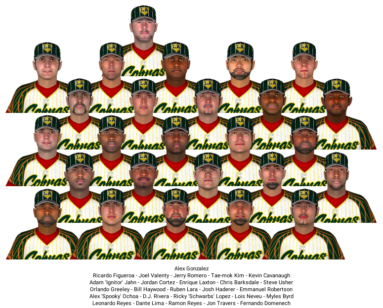

San Francisco scored 18 and still couldn’t shake Phoenix
On July 26 the San Francisco Warriors could have lost a series and still had room to spare. They were six games ahead of Phoenix. On August 19 they scored 18 runs and couldn’t shake…
 Experiencing Action Baseball
Experiencing Action Baseball

NBC Western Division
62–59 · 2 games back · Cobras Ballpark
The latest final on August 19 was Chicago 10, Los Angeles 3.
On July 26 the San Francisco Warriors could have lost a series and still had room to spare. They were six games ahead of Phoenix. On August 19 they scored 18 runs and couldn’t shake…
| Season | Franchise | W–L | Finish |
|---|---|---|---|
| 1980 | Los Angeles Cobras | 74–88 | Regular season |
| 1979 | Los Angeles Cobras | 71–91 | Regular season |
| 1978 | Los Angeles Cobras | 77–85 | Regular season |
| 1977 | Los Angeles Cobras | 81–81 | Tournament |
| 1976 | Los Angeles Cobras | 63–99 | Regular season |
| 1975 | Los Angeles Cobras | 72–90 | Regular season |
| 1974 | Los Angeles Cobras | 67–95 | Regular season |
| 1973 | Los Angeles Cobras | 71–91 | Regular season |
| 1972 | Los Angeles Cobras | 70–92 | Regular season |
